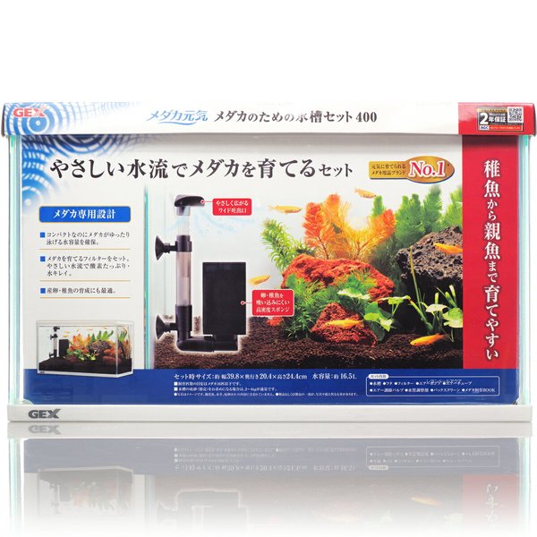
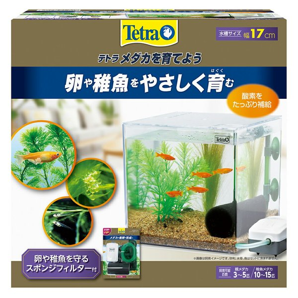
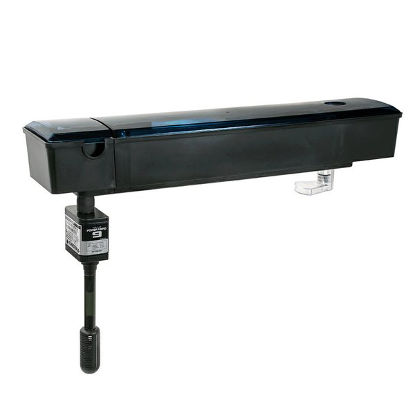
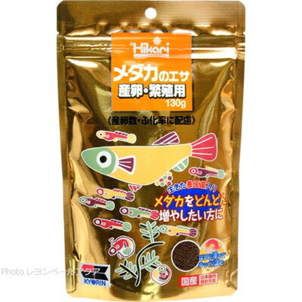
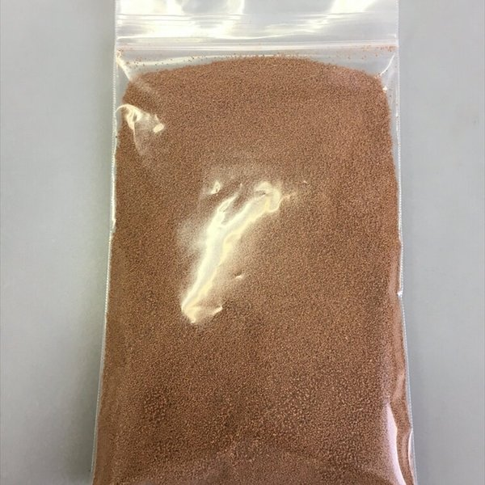
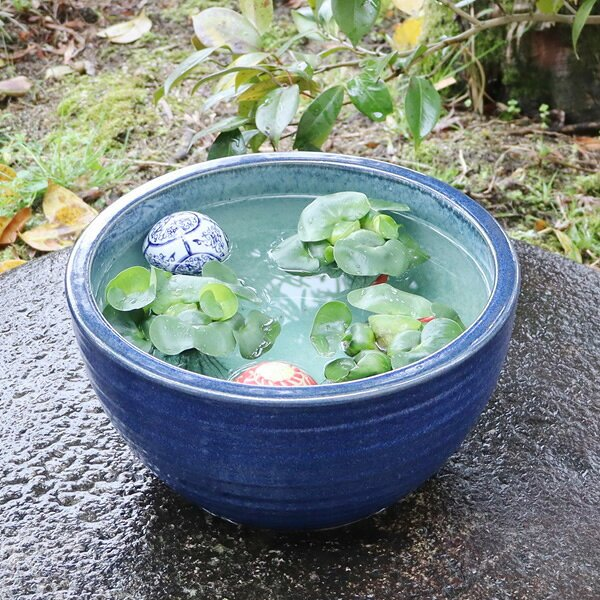
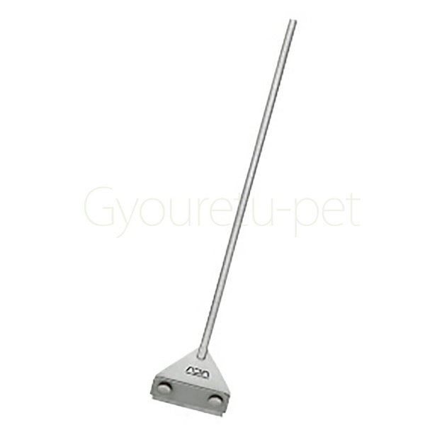
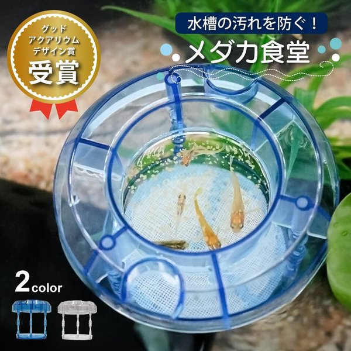
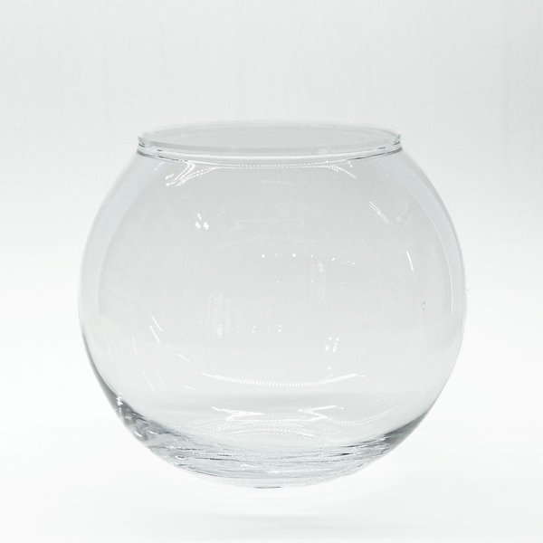

【2026年・メダカ飼育＆アクアリウム10選】GEX メダカ元気 水槽セット400・テトラ メダカを育てよう・コトブキ工芸 スーパーターボ600・キョーリン ひかり メダカのエサ・日清丸紅飼料 おとひめ・信楽焼 睡蓮鉢・無農薬アナカリス・ADA プロレイザー・メダカ食堂・苔テラリウム ボウルを実売価格で比較
メダカは、水槽とエサと水草があれば、家の一角で飼い始められます。ただ、道具を揃える段階で迷いやすいのが、水槽の大きさとフィルターの組み合わせです。小さすぎる水槽は水がすぐ濁り、大きすぎる水槽は置き場所に困ります。
選ぶ軸は3つです。まず置き場所。室内の机の上なら30cm前後、ベランダや庭なら睡蓮鉢が向いています。次に水の量とろ過。水槽が大きいほど水質は安定するので、フィルターのろ材が多く入るものを選ぶと手入れの頻度を減らせます。最後に隠れ家と産卵床。水草があるとメダカが落ち着き、卵も産み付けます。
本記事では、楽天市場で人気・高評価のメダカ飼育・アクアリウム用品10選を、実売価格とレビュー評価つきで写真付き紹介します。
- おすすめ10選 スペック・特徴比較表
- BEST 1｜GEX メダカ元気 メダカのための水槽セット400
- BEST 2｜テトラ 水槽セット メダカを育てよう
- BEST 3｜コトブキ工芸 上部フィルター スーパーターボ トリプルボックス 600
- BEST 4｜キョーリン ひかり メダカのエサ 産卵・繁殖用 130g
- BEST 5｜めだかのエサ おとひめ B2 100g
- BEST 6｜信楽焼 10号 なまこ色 水鉢・睡蓮鉢
- BEST 7｜国産無農薬 アナカリス 10本セット
- BEST 8｜ADA プロレイザー・ミニ
- BEST 9｜SemiSta メダカ食堂 給餌トレー
- BEST 10｜苔テラリウム ガラスボウル セミオープン フタ付き
- 【読者負担0円】買わなくても得する無料サービス
- まとめ：メダカ飼育・アクアリウム10選の選び方
| 順位 | 商品名 | ブランド | 最大の特徴・おすすめ理由 | 総合評価 |
|---|---|---|---|---|
| BEST 1 | GEX メダカ元気 メダカのための水槽セット400 | GEX（ジェックス） | 水槽・フィルター・フタ・砂・エサが揃う | 4.81 |
| BEST 2 | テトラ 水槽セット メダカを育てよう | テトラ（Tetra） | 卵・稚魚から育てやすい構成 | 4.60 |
| BEST 3 | コトブキ工芸 上部フィルター スーパーターボ トリプルボックス 600 | コトブキ工芸 | ろ材をたっぷり入れられる | 4.43 |
| BEST 4 | キョーリン ひかり メダカのエサ 産卵・繁殖用 130g | キョーリン | 産卵・繁殖向けの栄養設計 | 4.81 |
| BEST 5 | めだかのエサ おとひめ B2 100g | 日清丸紅飼料 | 成魚向けの粒サイズ | 4.74 |
| BEST 6 | 信楽焼 10号 なまこ色 水鉢・睡蓮鉢 | 信楽焼 | 陶器の重さで屋外でも安定する | 4.72 |
| BEST 7 | 国産無農薬 アナカリス 10本セット | ノーブランド企画品（国産水草） | 無農薬なのでそのまま入れられる | 4.49 |
| BEST 8 | ADA プロレイザー・ミニ | ADA（アクアデザインアマノ） | ガラス面のコケを削り落とせる | 5.00 |
| BEST 9 | SemiSta メダカ食堂 給餌トレー | SemiSta（メダカ食堂） | エサの拡散を防いで水の汚れを抑える | 4.69 |
| BEST 10 | 苔テラリウム ガラスボウル セミオープン フタ付き | ノーブランド企画品（ガラス容器） | ふた付きで湿度を保てる | 4.58 |
GEX メダカ元気 メダカのための水槽セット400

GEXのメダカ元気シリーズの40cm水槽セットです。水槽にフィルター、フタ、砂、エサがひと通り入っていて、届いた日に水を張ればメダカを迎えられます。水槽の縁まで覆うフタ付きなので、メダカが跳ねても外に出にくい作りです。楽天市場での実売価格は約3,500円（2026年11月時点）。
- 水槽・フィルター・フタ・砂・エサが揃う
- 40cmでメダカを10匹前後育てられる
- フタ付きで跳ね出しを防げる
- レビューが37件と50件未満なので、届いたときの梱包と水槽の傷は開けて確かめたい
テトラ 水槽セット メダカを育てよう

テトラのメダカ飼育セットです。卵と稚魚をやさしく育てるための仕様で、水槽にフィルターとフタ、水質調整剤が付いています。小さめの水槽なので、机の上やベランダの日陰に置いて、まず数匹から飼い始める使い方ができます。楽天市場での実売価格は約1,412円（2026年11月時点）。
- 卵・稚魚から育てやすい構成
- フィルターとフタが最初から付く
- 設置面積が小さく室内に置ける
- レビューが10件と50件未満なので、付属フィルターの音は実際に使って確かめたい
コトブキ工芸 上部フィルター スーパーターボ トリプルボックス 600

コトブキ工芸の上部フィルターです。水槽の上に載せて使うタイプで、ろ材を入れたボックスを重ねた構造になっており、60cm水槽の水を循環させます。ろ材の量が多いので、メダカを多めに入れた水槽でも水が安定しやすいろ過方式です。楽天市場での実売価格は約3,480円（2026年11月時点）。
- ろ材をたっぷり入れられる
- 60cm水槽に対応する流量
- 分解して洗えるので手入れが続く
- 上部に載せるぶん、水槽のフタと併用しにくい
キョーリン ひかり メダカのエサ 産卵・繁殖用 130g

キョーリンのメダカ用のエサです。産卵と繁殖に向けた栄養バランスで作られていて、粒が小さく、水面に浮いてからゆっくり沈みます。メダカが食べ残しにくい大きさなので、水の汚れが進みにくいのも助かります。楽天市場での実売価格は約858円（2026年11月時点）。
- 産卵・繁殖向けの栄養設計
- 小さな粒で稚魚も食べやすい
- 130g入りで長く使える
- レビューが21件と50件未満なので、粒の大きさは成魚と稚魚で使い分けたい
めだかのエサ おとひめ B2 100g

日清丸紅飼料の「おとひめ」のB2サイズです。メダカの成魚に合わせた粒の大きさで、粉を固めたような軽いエサなので、水面に浮いてから時間をかけて沈みます。100gの袋入りで、複数の水槽に分けて与えられます。楽天市場での実売価格は約760円（2026年11月時点）。
- 成魚向けの粒サイズ
- よく食べる配合で成長が早い
- 100g入りでコストを抑えられる
- 袋の口が広いので、湿気を避ける容器に移すと安心
信楽焼 10号 なまこ色 水鉢・睡蓮鉢

信楽焼の10号の水鉢です。なまこ色の釉薬がかかった丸い鉢で、水を張ると睡蓮鉢としてもメダカ鉢としても使えます。陶器なので重さがあり、屋外に置いても風で動きにくく、夏場は水温が上がりにくいのが利点です。楽天市場での実売価格は約4,950円（2026年11月時点）。
- 陶器の重さで屋外でも安定する
- 水草や浮き草を浮かべられる深さ
- 1鉢でビオトープのように使える
- 陶器なので落とすと割れる。移動は両手で持つ
国産無農薬 アナカリス 10本セット
国産で無農薬のアナカリスを10本まとめたセットです。メダカの隠れ家や産卵床になり、水槽に入れておくだけで酸素を供給して水質の安定を助けます。農薬を使っていないので、届いたらそのまま水槽に沈められます。楽天市場での実売価格は約640円（2026年11月時点）。
- 無農薬なのでそのまま入れられる
- 10本入りでレイアウトしやすい
- メダカの隠れ家と産卵床になる
- ノーブランド企画品のため、届いた水草の状態は開封して確かめたい
ADA プロレイザー・ミニ

アクアデザインアマノ（ADA）のプロレイザー・ミニです。水槽のガラス面に付いたコケを、刃を当てて削り落とす道具で、握りが細く手元が狂いにくい長さにまとまっています。水草を傷めずにガラスの曇りだけを落とせるので、鑑賞面の手入れに向いています。楽天市場での実売価格は約5,610円（2026年11月時点）。
- ガラス面のコケを削り落とせる
- 刃が小さく水草の間でも扱いやすい
- 握りが細く手が疲れにくい
- レビューが1件と50件未満なので、刃の切れ味は届いてから確かめたい
SemiSta メダカ食堂 給餌トレー

メダカのエサの食べ残しを減らすための給餌器です。水面に浮かべて使う皿の形をしていて、エサをここに落とすと拡散せず、メダカが集まって食べます。食べ残しが底に沈みにくいので、水槽の水が汚れにくくなります。楽天市場での実売価格は約980円（2026年11月時点）。
- エサの拡散を防いで水の汚れを抑える
- 浮かせるだけなので設置が簡単
- 2色から選べる
- エサの粒が大きいと皿の上に残るので、すくって捨てる
苔テラリウム ガラスボウル セミオープン フタ付き

ふた付きのガラスボウルです。苔を敷いて小さなテラリウムを作ったり、メダカの稚魚を一時的に入れたりと、水を扱う小さな器として使えます。セミオープンのふたなので、湿気を保ちながら空気も通ります。楽天市場での実売価格は約970円（2026年11月時点）。
- ふた付きで湿度を保てる
- ガラスなので中がよく見える
- 卓上に置ける小ささ
- レビューが12件と50件未満なので、ふたの合い方は届いてから確かめたい
この記事の商品を買う前に、まずは無料で得する選択肢をチェック。どれも登録・利用は0円で、無料期間中に解約すれば料金はかかりません。読みたい雑誌がある人、ポイントを貯めたい人、アンケートなら気軽という人、それぞれに合うものを選べます。
初回31日無料・無料期間中に解約すれば0円 → 楽天ポイントモール｜登録無料で毎日ポイ活
買い物なしでもポイントが貯まる無料サービス → 楽天インサイト｜アンケートに答えてポイント
登録無料・すきま時間のアンケートで貯まる → 楽天カード｜年会費永年無料
新規発行・年会費ずっと0円 →
4つのサービスの違いと使い分けは「出費0円で得する！買わずにポイントが貯まる無料サービス厳選4選」でまとめています。
💡 まとめ：メダカ飼育・アクアリウム10選の選び方
メダカ飼育は、水槽を決めてからエサと水草を足す順番にすると失敗しにくくなります。室内で始めるならGEXのメダカ元気 水槽セット400かテトラのメダカを育てよう、60cm水槽で水量を確保するならコトブキ工芸のスーパーターボ トリプルボックス600。エサはキョーリンのひかり メダカのエサか日清丸紅飼料のおとひめ、屋外で鉢飼いにするなら信楽焼の睡蓮鉢、隠れ家と産卵床には国産無農薬のアナカリス。ガラス面のコケはADAのプロレイザー・ミニ、食べ残しを減らすならメダカ食堂、稚魚の一時飼育や苔のテラリウムにはガラスボウルが使えます。まず水槽とエサを揃えて1週間回し、水が落ち着いてから水草と手入れ道具を足すと、メダカを減らさずに育てられます。
楽天市場では「5と0のつく日」や「お買い物マラソン」などのキャンペーンに合わせて購入すると、ポイント還元が最大化してお得に手に入ります。ぜひチェックしてみてくださいね。